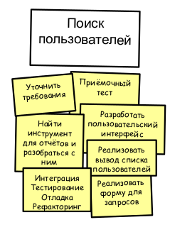
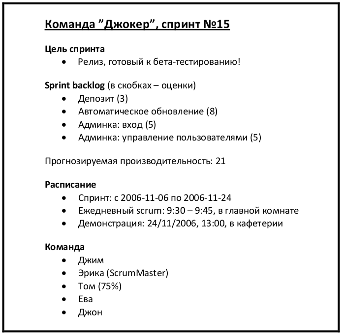
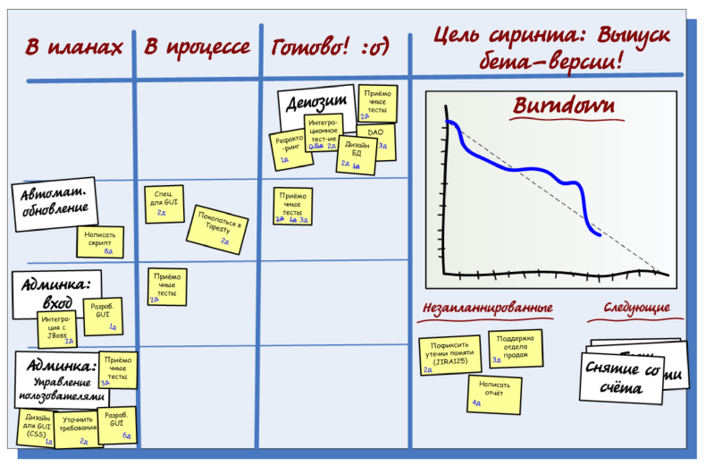
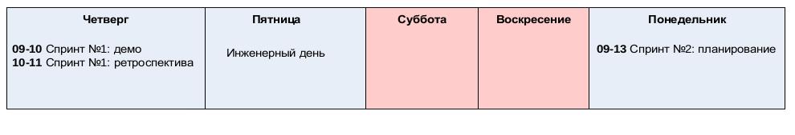

|
Jun 06, 2014
|
Старая, но очень полезная книга по Agile. Довольно редкий случай когда вся
книга описывает рабочие процессы реальной организации, никакой воды, никакой
зауми и вялой теории. Очень рекомендую. Тем более книга в свободном доступе и
переведена на русский язык (лучи добра и счастья переводчикам).
http://scrum.org.ua/wp-content/uploads/2008/12/scrum_xp-from-the-trenches-rus-final.pdf
Дальше несколько интересных цитат из книги:
По правде говоря, у системы с высоким внутренним качеством иногда может быть довольно низкое внешнее. Но наоборот бывает крайне редко. Сложно построить что-то хорошее на прогнившем фундаменте.
По моему личному опыту, жертвовать внутренним качеством – это практически всегда очень и очень плохая идея. Сэкономленное время ничтожно мало по сравнению с той ценой, которую вам придётся заплатить как в ближайшем будущем, так и в перспективе. Как только качество вашего кода ухудшится, восстановить его будет очень тяжело.
Учитесь оставаться в рамках установленного времени, учитесь давать реалистичные оценки. Это касается как продолжительности встреч, так и продолжительности спринта.
А различие очень простое: истории это нечто, что можно продемонстрировать, что представляет ценность для product owner’а, а задачи либо нельзя продемонстрировать, либо они не представляют ценности для product owner’a.
Пример разбиения истории на более мелкие:
Пример разбиения истории на задачи:
Мы попробовали различные варианты работы с техническими историями. Мы пробовали считать их самыми обычными user story. Это была неудачная идея: для product owner’а приоритезировать их в product backlog’е было всё равно, что сравнить тёплое с мягким. По очевидным причинам технические истории получали самый низкий приоритет с объяснением: “Да, ребята, несомненно, ваш сервер непрерывной интеграции – очень важная штука, но давайте сперва реализуем кое-какие прибыльные функции? После этого вы можете прикрутить вашу техническую конфетку, окей?”
если вы пользуетесь стикерами для задач, не забудьте прикрепить их скотчем, или же в один “прекрасный” день вы найдете их аккуратной кучкой на полу.
Как быть с опоздавшими?
Некоторые команды заводят специальную копилку. Если вы опоздали, даже на минуту, вы кидаете в копилку определённую сумму. Без вариантов. Даже если вы позвонили перед началом ежедневного Scrum’а и предупредили, заплатить всё равно придётся :o)
Деньги из копилки используются на общественные нужды. Например, на них можно заказать пиццу
Если вы действительно хотите разобраться, как планировать релиз, советую пропустить эту главу и купить книгу Майка Кона “Agile Estimating and Planning”. Эх, прочитать бы мне эту книгу раньше... (она попалась мне уже после того, как мы на собственном опыте поняли, что к чему...). Мой способ планирования простой, как угол дома, но может послужить вам хорошей отправной точкой.
Вот эта книга, кстати тоже переведена на русский
Scrum решает вопросы управления и организации, тогда как XP специализируется на инженерных практиках. Вот почему эти две технологии хорошо работают вместе, дополняя друг друга.
Работка через тестирование (TDD)
Наконец-то! Разработка через тестирование для меня важнее, чем Scrum и XP вместе взятые. Можете отнять у меня дом, телевизор, собаку, но только попробуйте запретить использование TDD! Если вам не нравится TDD, тогда просто не подпускайте меня близко, иначе я всё равно привнесу его в проект втихую :)
Мы столкнулись с ситуацией, когда было невозможно внедрить Scrum в большом проекте из-за того, что его команда постоянно тушила пожары, т.е. в панике устраняла дефекты преждевременно выпущенной системы. Это был порочный круг: из-за того, что всё время уходило на постоянную борьбу с пожарами, не было времени на их предотвращение (т.е. на улучшение архитектуры, внедрение автоматического тестирования, создание систем мониторинга и оповещения, и т.п.)